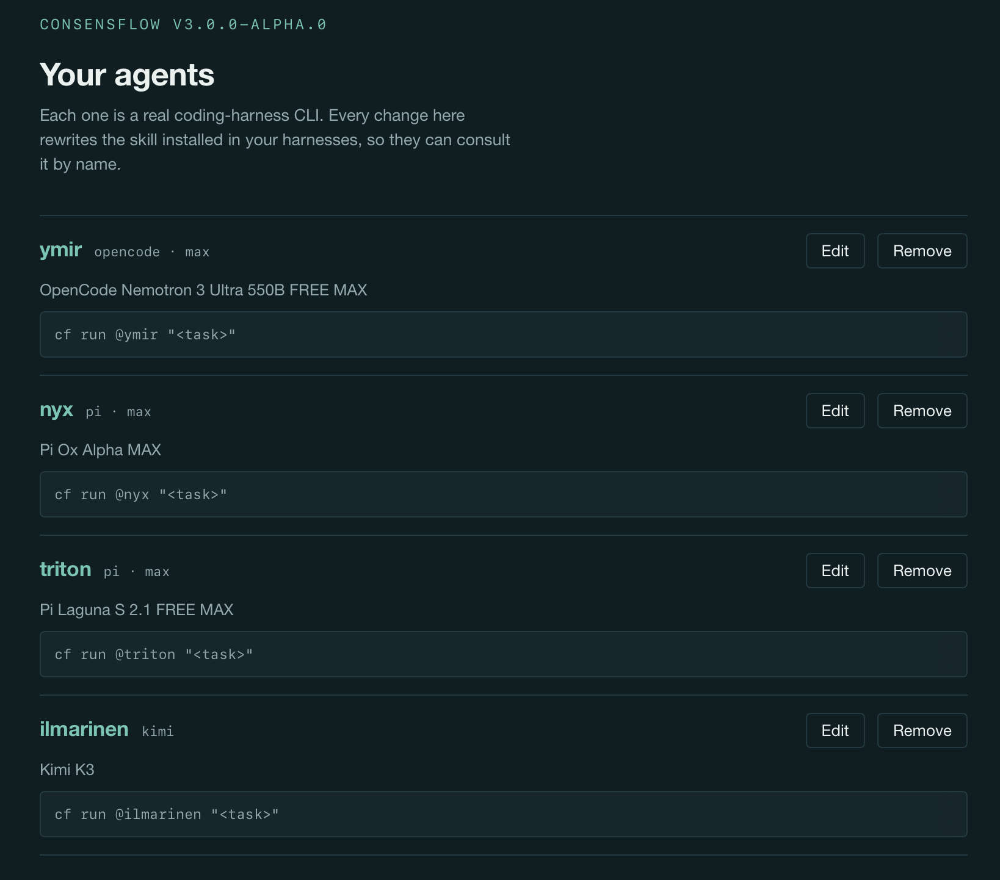
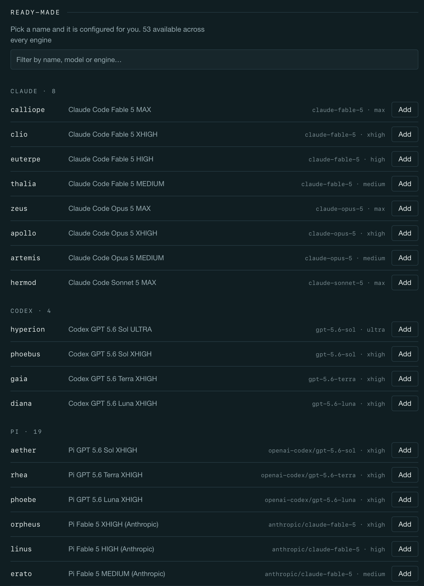
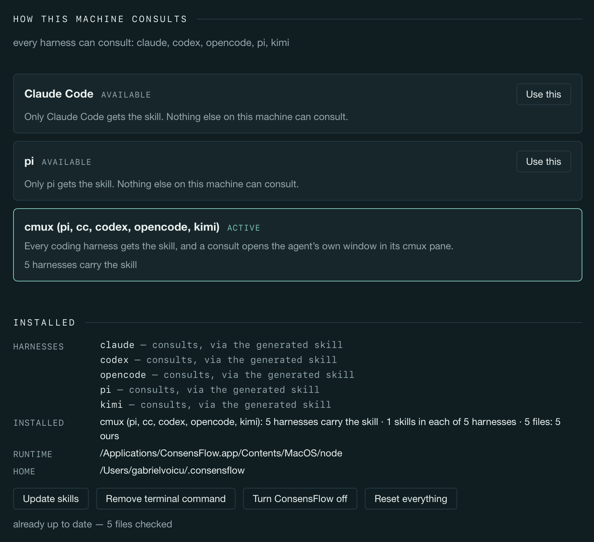
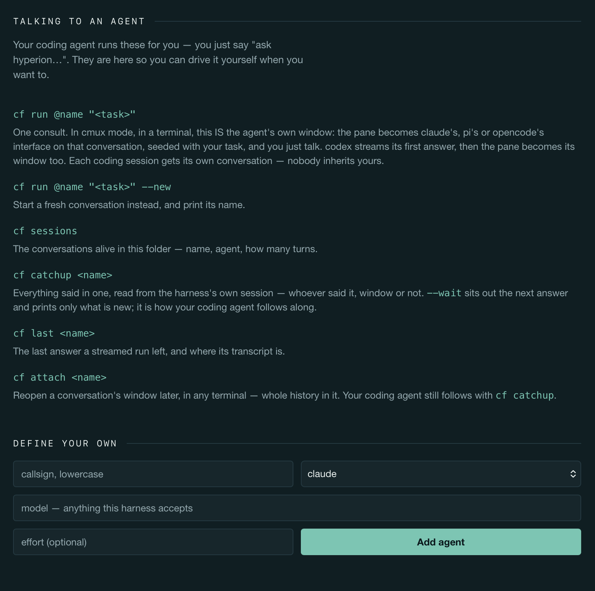
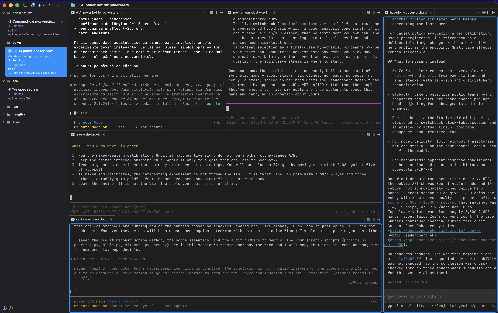

Named AI agents your coding agent can consult.
You keep a roster — zeus is Claude Opus at max effort, hyperion is GPT 5.6 Sol at ultra. ConsensFlow generates one skill from it and installs that skill into your coding harnesses. From then on you say “ask hyperion whether this migration is safe” — and your coding agent runs it, waits, and reports the answer back, attributed. You never type a command.
Five harnesses, each a real CLI you already have installed and logged into — your Claude subscription, your ChatGPT login, whatever you configured. No accounts, no API keys — ConsensFlow stores no credentials. No daemon, no database: the skill is the product.
One roster, one skill, every harness
All five harnesses read the same Agent Skills format. ConsensFlow is the thing that writes it — from your roster, into whichever harnesses your mode puts in scope.
Build your roster
Each agent is a name, a harness CLI, a model, an effort. Pick from 53+ ready-made presets grouped by engine — one click to add — or define your own with any model string its harness accepts.
One skill installs itself
The moment your first agent exists, ConsensFlow generates a single skill from the roster and installs it. Every change rewrites it — no install step, no sync step. The skill's description names your actual agents, which is what makes a harness reach for it when you say a name.
Ask by name
Say “ask hyperion whether this migration is safe.” Your coding agent runs the consult, waits for the answer, and reports it back — attributed to hyperion. You never type a command; the commands below are its, not yours.
Choosing a mode is the install
A machine runs exactly one of these. A mode is a scope, not a different product: all three install the same generated skill and differ only in who receives it.
Claude Code leads
Only Claude Code gets the skill. Nothing else on this machine can start a consult.
- Leads: Claude Code
- Reaches: agents on all five harnesses
cf run @hyperion "is this migration safe?"
— the answer streams back, reported to you attributed to hyperion (hyperion runs on Codex; Claude Code never left its window)
pi leads
Only pi gets the skill. Nothing else on this machine can start a consult.
- Leads: pi
- Reaches: agents on all five harnesses
cf run @ymir "review this diff"
— the review streams back, attributed to ymir (ymir runs on OpenCode; pi stays the lead)
cmux mode
Every harness gets the skill. Any of the five can lead — and a consult opens the agent's own window in its cmux pane.
- Leads: Claude Code, Codex, pi, OpenCode, Kimi Code
- Reaches: agents on all five harnesses
cf run @triton "is the retry path sound?"
conversation: bubble-sky (new) — the pane beside you is now triton's own window; type into it directly
your lead follows along: cf catchup bubble-sky --wait
A consult is the agent's own window
In cmux mode, in a terminal, a consult does not print an answer and exit. It opens the harness's own interface — claude's, pi's, OpenCode's real interface — in its own cmux pane, seeded with your task, and stays. You watch the agent work in its real window and type follow-ups straight into it.
Your coding agent follows along by reading the harness's own session with cf catchup — read-only, never written, and never the screen: screen text is a picture of an answer, not an answer. Codex and Kimi Code can't pre-set an interactive session, so they stream their first answer — then the pane becomes their window too.
- One agent can hold several named conversations at once, each in its own pane — “ask ares in bubble-sky about the migration.”
- A conversation belongs to the session that started it — a new coding session starts fresh, never inherits the last one's.
- The harness owns the session; ConsensFlow only remembers which one. No daemon, no database, no long-lived child.
The app is the installation
One window around the roster: your agents, the ready-made catalog, the mode this machine runs, and the commands — everything else happens from here.





One spawn verb, named conversations
Your coding agent runs these for you — you just say “ask hyperion…”. They are here so you can drive it yourself when you want to.
cf run @name "<task>"One consult. In cmux mode, in a terminal, this is the agent's own window — seeded with your task, and you just talk. Everywhere else it streams in the foreground.
cf run @name "<task>" --newStart a fresh conversation instead, in its own window, and print its name.
cf run @name "<task>" --session <name>A specific existing conversation, by name — or a fresh one under a name you minted with cf mint.
cf sessionsThe conversations alive in this folder — name, agent, how many turns.
cf catchup <name> [--unread] [--wait]What has been said, read from the harness's own session — whoever said it, window or not. --unread is only what's new; --wait sits out the next answer. This is how your coding agent follows along.
cf last <name>The last answer a streamed run left, and where its transcript is.
cf attach <name>Reopen a conversation's window later, in any terminal — whole history in it.
cf mode · cf doctor · cf offWhich mode is active and what it costs; harnesses, agents, skills and runtime checked; every installed file removed — your agents and runs are kept.
Each coding session gets its own conversation — nobody inherits yours. Ones somebody else started stay reachable by name.
What it does — and what it never does
Full permissions, on purpose
Agents run with the harness's full-permissions flag. There is no knob, and that is deliberate: an agent is a helper you hand a task to — it reads and writes files and reaches the network. The protection is the approval gate on keeping its work, not a fence around the run — the skill tells your coding agent never to apply or keep an agent's changes without asking you first.
Nothing rides along
An agent sees the brief, the task, and whatever you hand it with --handoff-file. No conversation is stashed or attached automatically, in any mode. The handoff is the lead's to give — everywhere, the same way.
Your logins stay yours
Agents run through the harness CLIs you already have installed and logged in. ConsensFlow stores no credentials and asks for none — and the generated commands strip a stray ANTHROPIC_API_KEY / OPENAI_API_KEY for the one command they run, so a leftover export cannot silently move a subscription login onto per-token API billing.
Drift is sacred
Ownership is a hash manifest. A file you edited by hand is drifted: never overwritten or deleted without --force, and a file ConsensFlow did not write is never touched. Claude Code's settings.json is never written at all.
Drag it to Applications. Open it.
The app carries its own Node runtime and its own copy of ConsensFlow, so nothing has to be installed first — agents, modes and the skill all happen in its window.
Unsigned for now, so macOS blocks the first launch. Right-click → Open still works on older systems; since Sequoia, Gatekeeper no longer offers that for unnotarized apps, so open it once, let it be refused, then allow it in System Settings → Privacy & Security → Open Anyway. About 148 MB installed — nearly all of it the Node runtime.
Nothing is seeded. Pick from the ready-made list — zeus, hyperion, athena, endymion… — or define your own. The skill installs itself the moment your first agent exists, and rewrites itself on every change after. Choosing a mode is the install.
What it needs
- macOS. The app is a Mac app; the window is the product.
- At least one of the five harness CLIs — claude, codex, pi, opencode, kimi — installed and logged in.
- cmux, for cmux mode. The two host modes need no terminal multiplexer at all.
The roster lives at ~/.consensflow/agents.json, shared by everything that reads it. The cf launcher goes on your PATH in every mode. cf off removes every file ConsensFlow installed — your agents and runs are kept. MIT licensed.
Keep a roster. Ask by name.
One skill, generated from your agents, installed into every harness you choose. No accounts, no API keys, no daemon — and MIT licensed.
Want your team to work like this?
ConsensFlow is one piece of a larger AI-native toolkit — and of a way of working your whole team can adopt: talks ("Becoming an AI Native Company"), hands-on team training that teaches employees to use AI, and AI adoption consulting for engineering teams.
AI-native consulting →